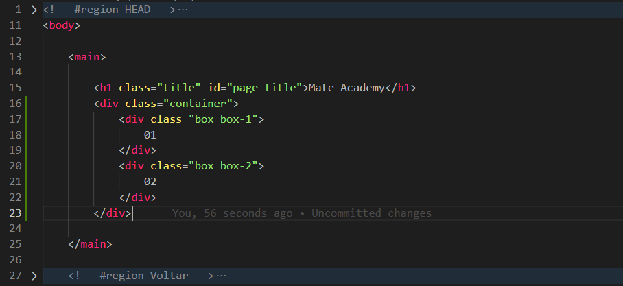
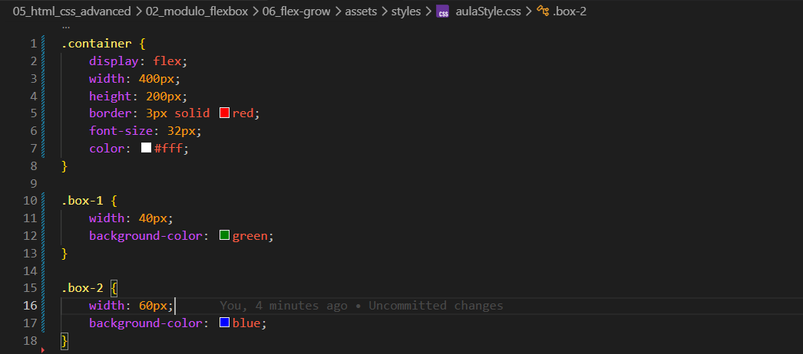
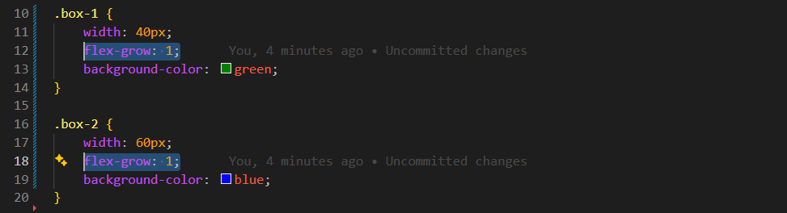

flex-grow
Intro
Aqui iremos ver como gerenciar as dimensões dos elementos ao longo do eixo principal de um container flexível.
Aqui iremos ver como gerenciar as dimensões dos elementos ao longo do eixo principal de um container flexível.
HTML:

CSS:

Visto o código, se abrirmos em nosso navegador, usando o inspecionar (F12) e acessando a aba Computed, podemos ver o tamanho de cada elemento. Nesse caso, o box-1 terá 32px e o box-2 terá 48px.
Para o box-1, iremos definir width: 40px;.
Para o box-2, definiremos width: 60px;.
Com isso, definimos manualmente as dimensões dos elementos. Porém, podemos fazer com que eles aumentem automaticamente. Para isso, usamos a propriedade flex-grow.
Ao utilizarmos essa propriedade, o elemento que a receber poderá ocupar o espaço livre disponível no container. Seu valor padrão é 0.
Se adicionarmos flex-grow: 1; em ambos os elementos (box-1 e box-2), o espaço livre será dividido igualmente entre eles.

Porém, o espaço não ficará perfeitamente igual entre os elementos, pois o cálculo leva em consideração o tamanho inicial de cada item. Como o box-1 e o box-2 já possuíam um width definido, o espaço livre é dividido e somado ao tamanho que cada um já tinha anteriormente.
A propriedade flex-basis funciona de forma parecida com o width. Porém, ela se adapta ao eixo principal do container flexível.
Por exemplo, se a direção do container mudar de horizontal para vertical, o flex-basis acompanhará essa mudança automaticamente. Diferente do width, que continua controlando apenas a largura.
Basicamente, o flex-basis funciona como um width ou height, dependendo da direção do eixo principal.
Também podemos adicionar restrições, utilizando propriedades como max-width ou max-height. Exemplo:
max-height: 110px;
Conteúdo da aula